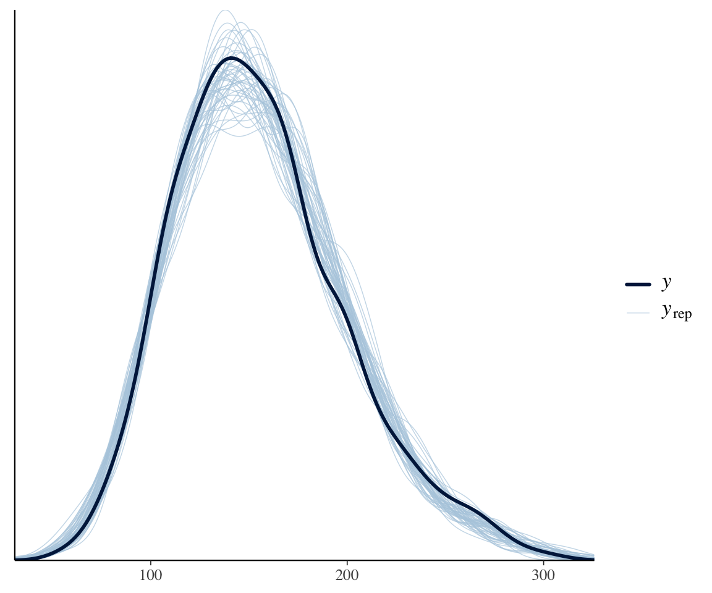
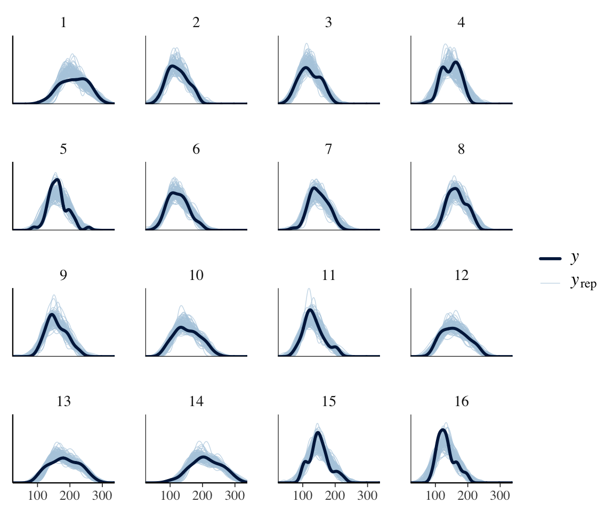
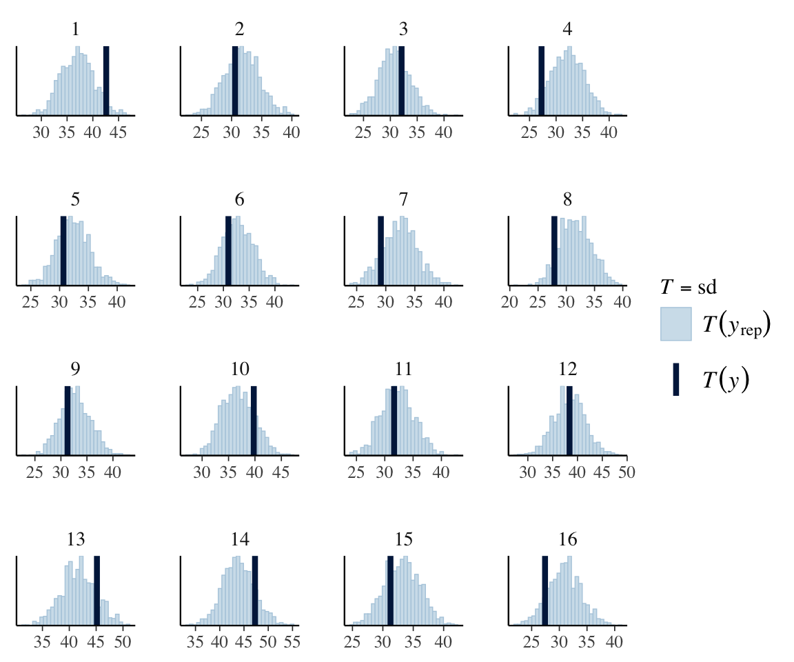
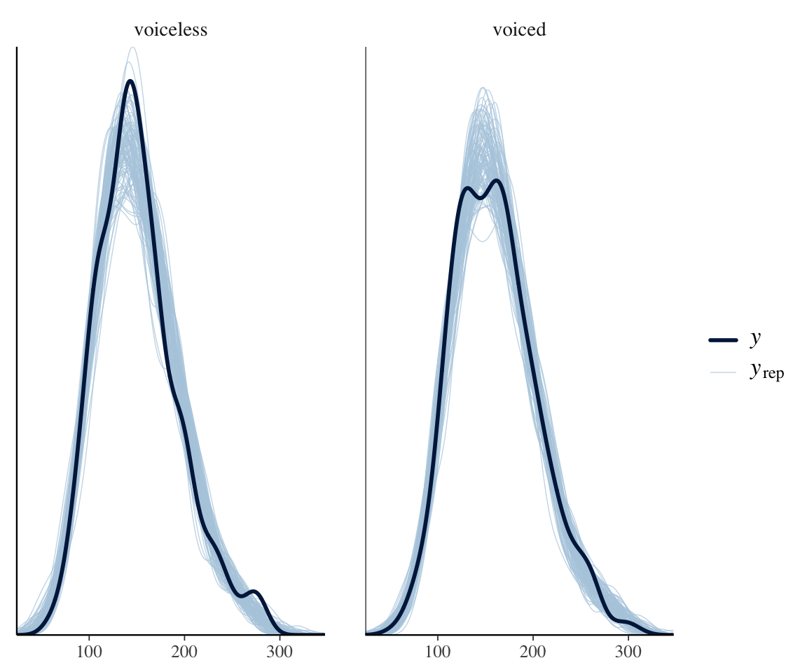
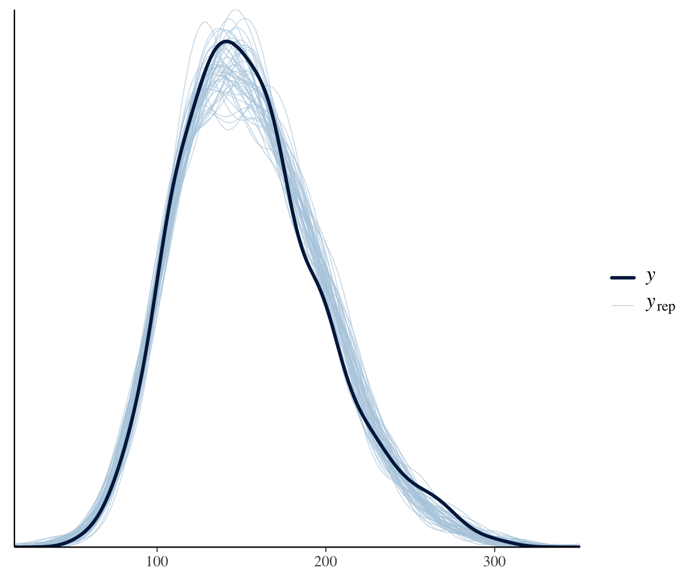
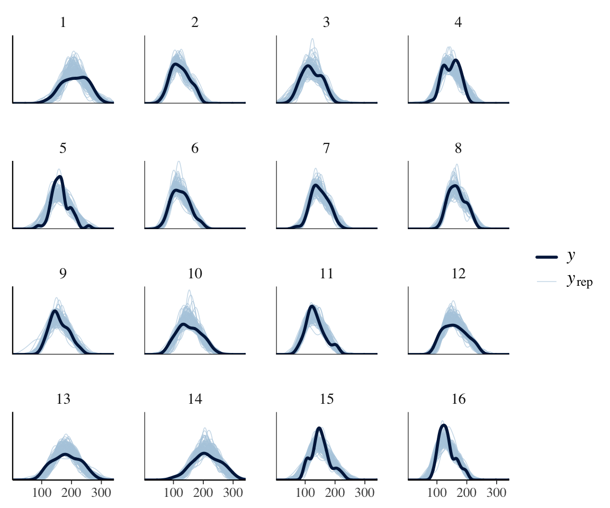
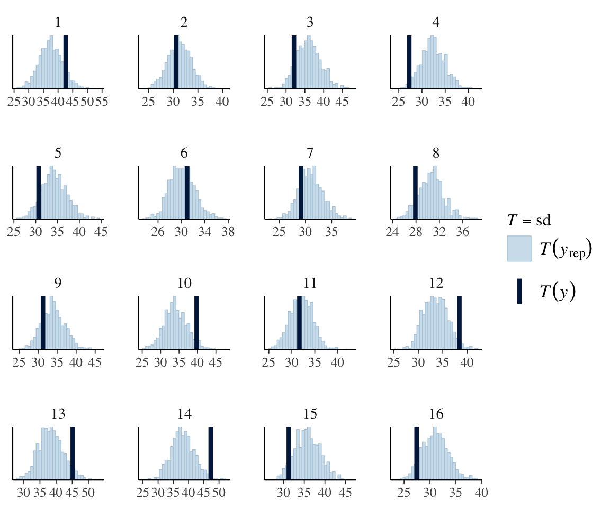

library(brms)
library(lme4)
library(arm)
library(tidyverse)
library(tidybayes)
library(bayestestR)
library(bayesplot)
library(loo)
library(broom) ## for tidy model summaries
library(broom.mixed) ## for tidy model summaries for lme4 models
library(patchwork)7 Bayesian Hierarchical Models 3
These lecture notes cover topics from:
Topics:
- Hypothesis testing for BHMs
- Distributional regression
7.1 Preliminaries
Load libraries we will need:
Practical notes
If you have loaded
rethinking, you need to detach it before using brms. See Kurz (2023) Sec. 4.3.1.I use the
fileargument when fittingbrmsmodels to make compiling this document easier (so the models don’t refit every time I compile). You may or may not want to do this for your own models. Seefileandfile_refitarguments in?brm.Here I set the
file_refitoption so “brms will refit the model if model, data or algorithm as passed to Stan differ from what is stored in the file.”
options(brms.file_refit = "on_change")I use
chains = 4, cores = 4when fittingbrmmodels below—this means 4 chains, each to be run on one core on my laptop.cores = 4may need to be adjusted for your computer. (You may have fewer or more cores; I have 8 cores, so this leaves 50% free.) You should figure out how to use multiple cores on your machine.Make numbers be printed only to 3 digits, for neater output:
options(digits = 3)7.1.1 Data
Load and preprocess the neutralization data, as in Section 6.1.1:
neutralization <- read.csv("https://osf.io/qg5fc/download", stringsAsFactors = TRUE) %>%
mutate(voicing_fact = fct_relevel(voicing, "voiceless")) %>%
filter(!is.na(prosodic_boundary)) %>%
mutate(
prosodic_boundary = rescale(prosodic_boundary),
voicing = rescale(voicing_fact),
item_pair = as.factor(item_pair),
subject = as.factor(subject)
)
## Code multi-level factors with Helmert contrasts
## so that all predictors are centered
contrasts(neutralization$vowel) <- contr.helmert
contrasts(neutralization$place) <- contr.helmert7.2 Hypothesis testing
The neutralization data is a good case to illustrate aspects of hypothesis testing for Bayesian models:
- The distinction between “existence” and “significance” measures
- Model comparison using prediction (LOO, WAIC) vs. likelihood (Bayes factor).
- How tests differ for fixed and random effect terms.
(a) and (b) were introduced for non-hierarchical models in Section 3.7, while (c) is new for hierarchical models.
We will use the final model of the neutralization data fitted in the last chapter, which we refit as neutralization_m11_1. This is the same model as neutralization_m10_3, but with this argument added, to save all parameter draws:
save_pars = save_pars(all = TRUE)is necessary for calculating Bayes Factors in general (see here). We’ll fit all models in this chapter using this argument, just to be consistent.
## same prior as prior_2 in previous chapter
prior_11_1 <- c(
prior(normal(150, 75), class = Intercept), # beta_0
prior(normal(0, 50), class = b),
prior(exponential(0.02), class = sd), # random-effect SDs
prior(lkj(2), class = cor), # random-effect correlation matrices
prior(exponential(0.02), class = sigma) # residual variance
)
neutralization_m11_1 <- brm(
data = neutralization,
family = gaussian,
vowel_dur ~ voicing + place + vowel + prosodic_boundary +
(1 + voicing + place + vowel + prosodic_boundary | subject) +
(1 + voicing + prosodic_boundary | item_pair),
prior = prior_11_1,
iter = 2000, warmup = 1000, chains = 4, cores = 4,
save_pars = save_pars(all = TRUE),
file = "models/neutralization_m11_1.brm"
)7.2.1 Fixed effects
7.2.1.1 Existence and significance
The existence of the voicing fixed effect is clear from the posterior of neutralization_m11_1. We can confirm this by calculating \(p_d\) (see Section 3.7.1):
pd(neutralization_m11_1)
## Probability of Direction
##
## Parameter | pd
## --------------------------
## (Intercept) | 100%
## voicing | 100%
## place1 | 99.98%
## place2 | 89.92%
## vowel1 | 54.10%
## vowel2 | 100%
## vowel3 | 99.25%
## vowel4 | 100%
## prosodic_boundary | 100%For significance, we calculate \(p_{\text{ROPE}}\) (see Section 3.7.2), assuming a rope of [-5 msec, 5 msec]:
rope(neutralization_m11_1, range = c(-5, 5), ci = 1)
## # Proportion of samples inside the ROPE [-5.00, 5.00]:
##
## Parameter | inside ROPE
## -------------------------------
## Intercept | 0.00 %
## voicing | 1.47 %
## place1 | 4.88 %
## place2 | 97.52 %
## vowel1 | 78.70 %
## vowel2 | 0.00 %
## vowel3 | 89.25 %
## vowel4 | 9.53 %
## prosodic_boundary | 0.18 %We can be fairly confident that the voicing effect is practically significant (because \(p_{\text{ROPE}}\) is near 0).
Exercise 7.1 Recall that it’s not actually clear what the ROPE should be for the neutralization data: anywhere between 5 and 10 msec could be argued to be functionally equivalent to 0 (Section 6.3.1).
How would our conclusion change, if at all, if the ROPE were [-8, 8]? [-10, 10]?
7.2.1.2 Bayes factor vs. LOO comparison
Recall that to calculate Bayes Factors, we should re-fit the model with more iterations (Section 3.7.3), at least 40,000 posterior samples. This is left as an exercise for all Bayes Factor calculations in this chapter—since re-fitting each model may take a long time on your computer (each one takes a couple of minutes on mine), we’ll just compute Bayes Factors using our current models (fitted with fewer iterations) and assume they are accurate enough.1 For a “real” analysis, make sure to use enough iterations.
Now, calculate the Bayes Factor for the voicing fixed effect using our current model:
bf_pointnull(neutralization_m11_1)
## Sampling priors, please wait...
## Warning: Bayes factors might not be precise.
## For precise Bayes factors, sampling at least 40,000 posterior samples is
## recommended.
## Bayes Factor (Savage-Dickey density ratio)
##
## Parameter | BF
## ----------------------------
## (Intercept) | 1.51e+23
## voicing | 56.66
## place1 | 6.45
## place2 | 0.067
## vowel1 | 0.090
## vowel2 | 4.01e+05
## vowel3 | 0.939
## vowel4 | 146.80
## prosodic_boundary | 266.52
##
## * Evidence Against The Null: 0The voicing row assesses: how significant is the voicing fixed effect?
BF = 10-30 is “strong evidence” and 30-100 is “very strong”, so there is substantial evidence that the effect is meaningful.
Another way to assess the importance of voicing would be to use LOO (Section 4.2) to compare two models, with and without the voicing term:
neutralization_m11_1- The same model, with the
voicingfixed effect excluded.
(Note that we don’t need extra iterations for LOO comparison.)
Fit the second model:
## same as neutralization_m11_1, with the 'voicing'
## fixed effect removed
neutralization_m11_2 <- brm(
data = neutralization,
family = gaussian,
vowel_dur ~ place + vowel + prosodic_boundary +
(1 + voicing + place + vowel + prosodic_boundary | subject) +
(1 + voicing + prosodic_boundary | item_pair),
prior = prior_11_1,
iter = 2000, warmup = 1000, chains = 4, cores = 4,
save_pars = save_pars(all = TRUE),
file = "models/neutralization_m11_2.brm"
)
Practical note: updating a model
The update() command is an elegant way to re-fit models with terms added or removed. For example, instead of the brm() call just above, we could do:
neutralization_m11_2 <- update(neutralization_m11_1, . ~ . - voicing, chains = 4, cores = 4, iter = 2000)I am not using update() commands in these notes, just for clarity.
To do the model comparison, we first compute LOO for both models:
## Compute LOO for both models
neutralization_m11_1 <- add_criterion(neutralization_m11_1, c("loo"), cores = 4)
neutralization_m11_2 <- add_criterion(neutralization_m11_2, c("loo"), cores = 4)Model comparison:
loo_compare(neutralization_m11_1, neutralization_m11_2)
## elpd_diff se_diff
## neutralization_m11_1 0.0 0.0
## neutralization_m11_2 -1.5 2.3Suppose we are using the “more conservative” method from Section 4.2.1: choose the simplest model that doesn’t differ from others by more than two standard errors.
The models are not clearly different in terms of predictive accuracy. This is because the voicing term improves predictive accuracy little—it is a small effect, as expected. But it is clearly not zero, or in the ROPE, which is what matters for our research questions.
This illustrates how “improves predictive accuracy” does not necessarily line up with “scientifically important”, a point emphasized by McElreath (2020) (e.g. Sec. 7.5.1): a model with better predictive performance isn’t necessarily the one that more accurately reflects reality (= has the correct causal structure).2
Exercise 7.2 One application of model comparison is checking whether a factor (= predictor with multiple levels) significantly contributes to a model.
Consider the contribution of
placeto modelneutralization_m11_1. Why can’t we just example a \(p_d\) value to assess this predictor’s contribution to the model?Carry out model comparisons using BF and LOO to assess whether
placesignificantly contributes.
Note that calculating the BF here works differently from above—you need to fit two models (say: m1 and m2) with and without the term(s) of interest, then compare them using bayes_factor(m1, m2). An example is shown just below.
- Extra: Re-do (b), now operationalizing “does
placesignificantly contribute?” as “do the fixed and random effects involvingplacematter?” (rather than just the fixed effects).
7.2.2 Random effects
For a random-effect SD, there is no \(p_{d}\) to calculate—the SD must be positive.
Let’s consider the by-subject voicing slope SD, relevant for research question 2 for the neutralization data (Section 6.3.1).
To address “existence” of the by-speaker random slopes, we could compare models with and without this term, via Bayes Factor or LOO. Let’s again use LOO for model comparison.
We’ll need to fit a subset model, dropping the the by-speaker random slope of voicing and related correlation terms:
## 'voicing' removed from by-subject random effects
neutralization_m11_3 <- brm(
data = neutralization,
family = gaussian,
vowel_dur ~ voicing + place + vowel + prosodic_boundary +
(1 + place + vowel + prosodic_boundary | subject) +
(1 + voicing + prosodic_boundary | item_pair),
prior = prior_11_1,
iter = 2000, warmup = 1000, chains = 4, cores = 4,
save_pars = save_pars(all = TRUE),
file = "models/neutralization_m11_3.brm"
)Model comparison:
neutralization_m11_3 <- add_criterion(neutralization_m11_3, c("loo"), cores = 4, moment_match = TRUE) # moment_match used to avoid a warning you get otherwise
loo_compare(neutralization_m11_1, neutralization_m11_3)
## elpd_diff se_diff
## neutralization_m11_1 0.0 0.0
## neutralization_m11_3 -2.0 3.6The interpretation is similar to the model comparison above, assuming we’re again using the “simplest model that doesn’t differ by more than 2 SE” rule: allowing speakers to vary in the voicing effect doesn’t improve predictive performance.
For “significance” of this random effect, we’ll consider ways to calculate \(p_{rope}\) for the by-speaker random slope of voicing. There is no standard ROPE width, i.e. an answer to “how much by-speaker variability is effectively the same as no by-speaker variabilty”? We’ll consider two intuitive options.
First, we could make use of the same domain-specific knowledge as when defining ROPE for a fixed-effect coeffficient above: that 5 msec is a very small effect. We could say that the ROPE is [0, 1.25], where 1.25 is 5/4, since this would mean that 95% of speakers differ in the voicing effect by 5 msec (= \(\pm\) 2 SD).
Use hypothesis() to compute: what percentage of the posterior for the by-speaker random-slope SD for voicing, which we’ll call \(\sigma_{voicing}\), lies below 1.25?
# this illustrates one way to write random effect terms in brms::hypothesis
hypothesis(neutralization_m11_1, "voicing < 1.25", class = "sd", group = "subject")
## Hypothesis Tests for class sd_subject:
## Hypothesis Estimate Est.Error CI.Lower CI.Upper Evid.Ratio
## 1 (voicing)-(1.25) < 0 4.33 2.2 1.09 8.24 0.02
## Post.Prob Star
## 1 0.02
## ---
## 'CI': 90%-CI for one-sided and 95%-CI for two-sided hypotheses.
## '*': For one-sided hypotheses, the posterior probability exceeds 95%;
## for two-sided hypotheses, the value tested against lies outside the 95%-CI.
## Posterior probabilities of point hypotheses assume equal prior probabilities.Another possibility, which doesn’t require domain-specific knowledge, would be to define “speakers vary very little” relative to the voicing fixed effect: perhaps 1/10 of its magnitude.
This hypothesis() call asks what percentage of the time \(\sigma_voicing\) is less than 10% of the magnitude of \(\beta_{voicing}\) (the fixed effect).
# this illustrates another way to write random effect terms in brms::hypothesis
hypothesis(neutralization_m11_1, "sd_subject__voicing < abs(b_voicing)/10", class = NULL)
## Hypothesis Tests for class :
## Hypothesis Estimate Est.Error CI.Lower CI.Upper Evid.Ratio
## 1 (sd_subject__voic... < 0 4.62 2.2 1.31 8.57 0.01
## Post.Prob Star
## 1 0.01
## ---
## 'CI': 90%-CI for one-sided and 95%-CI for two-sided hypotheses.
## '*': For one-sided hypotheses, the posterior probability exceeds 95%;
## for two-sided hypotheses, the value tested against lies outside the 95%-CI.
## Posterior probabilities of point hypotheses assume equal prior probabilities.Note that this call takes into account uncertainty in the fixed effect (which is good), by calculating in what percentage of posterior draws \(\sigma_{voicing} < \beta_{voicing}/10\).
By either option, \(p_{rope}\) is about 0.02, suggesting that speakers differ meaningfully in the voicing effect.
Exercise 7.3
- We might also define “significance” (effect size) in terms of individual subjects. Let X = “percentage of subjects with voicing effects outside the ROPE”. This measures the proportion of subjects who have functionally zero
voicingeffects. Suppose the ROPE is [-5,5].
- The
sub_voicing_simdataframe, defined in Section 6.4, contains posterior draws of by-subject voicing effects. Use this to calculate X.
Interpret the results of the LOO model comparison, on the one hand, and a “signficance” calculation done above (this could be either your answer to (b), or a \(p_{\text{ROPE}}\) calculated above). What does the model say, qualitatively, about interspeaker variability?
Extra Calculate a Bayes Factor comparing
neutralization_m11_1andneutralization_m11_3.
- Do you need to increase the number of iterations used when fitting these models? (How can you check?)
Part (b) of this exercise is an example of how a Bayesian model can be interpreted intuitively, using a quantity of interest. We define a quantity \(X\) that addresses our question, then calculate the posterior distribution of \(X\). Here, \(X\) is “percentage of subjects with voicing effects larger than 5 msec [the just-noticeable difference for vowel duration]”.
7.2.3 Fixed and random effects
To assess the question “does \(X\) matter?”, it often makes sense to ask a fitted model, “how much do all fixed and random-effect terms involving \(X\) contribute?”
For our example, we could assess “whether voicing matters”—which combines RQs 1 and 2—by fitting a new version of neutralization_m11_1 without any voicing information. Fit this model:
prior_2 <- c(
prior(normal(150, 75), class = Intercept), # beta_0
prior(normal(0, 50), class = b),
prior(exponential(0.02), class = sd), # random-effect SDs
prior(lkj(2), class = cor), # random-effect correlation matrices
prior(exponential(0.02), class = sigma) # residual variance
)
neutralization_m11_4 <- brm(
data = neutralization,
family = gaussian,
vowel_dur ~ place + vowel + prosodic_boundary +
(1 + place + vowel + prosodic_boundary | subject) +
(1 + prosodic_boundary | item_pair),
prior = prior_2,
iter = 2000, warmup = 1000, chains = 4, cores = 4,
save_pars = save_pars(all = TRUE),
file = "models/neutralization_m11_4.brm"
)Model comparison using LOO:
## first, calculate LOO for the subset
## model
neutralization_m11_4 <- add_criterion(neutralization_m11_4, c("loo"), cores = 4)loo_compare(neutralization_m11_1, neutralization_m11_4)
## elpd_diff se_diff
## neutralization_m11_1 0.0 0.0
## neutralization_m11_4 -28.7 8.3Let’s also compute a Bayes Factor, to show an example of comparing two models differing in multiple terms.3
bayesfactor_models(neutralization_m11_1, neutralization_m11_4, verbose = FALSE)
## Warning: logml could not be estimated within maxiter, rerunning with adjusted starting value.
## Estimate might be more variable than usual.
## Bayes Factors for Model Comparison
##
## Model BF
## [2] place + vowel + prosodic_boundary + (1 + place + vowel + prosodic_boundary | subject) + (1 + prosodic_boundary | item_pair) 5.10e-09
##
## * Against Denominator: [1] voicing + place + vowel + prosodic_boundary + (1 + voicing + place + vowel + prosodic_boundary | subject) + (1 + voicing + prosodic_boundary | item_pair)
## * Bayes Factor Type: marginal likelihoods (bridgesampling)The Bayes Factor here is ~0.
Exercise 7.4 Interpret the BF and LOO results, from just above, qualitatively: what do they say about the question “does voicing matter”?
7.3 Distributional regression
Models so far in this course always only involve the mean of a distribution, which is modeled as a function of predictors, by-subject variability, etc. But other parameters could vary as well; such distributional regression models are easily fitted using brms/Stan (vignette). We’ll consider models where the residual variability, \(\sigma\) (“degree of noise”) is modeled, for linear regression.
This kind of model could let us address research questions involving (by-observation) variability. (Example: for VOT data, are voiced stops “more variable” than voiceless stops?)
We will fit a distributional extension of our neutralization model, following the steps shown in Nicenboim, Schad, and Vaishth (2024) Sec. 5.1.6.
One situation where we’d need such a model is when the research questions are about “noise”/variability—as in Ciaccio and Verı́ssimo (2022) (who also give a tutorial on these models using brms). Another example, from phonetics, is Sonderegger, Stuart-Smith, and Mielke (2023) (code here).
But, most of the time, our research questions will not be about this kind of variability. How might we decide we need such a model, even if the RQs don’t involve noise?
Across all data, a posterior predictive check of our neutralization model looks decent:4
pp_check(neutralization_m11_1, ndraws = 50, type = "dens_overlay")
However, we know that subjects differ a lot in how they speak during a production experiment. Some will speak formally, others casually; some may have had more sleep than others; and so on. This could lead to the degree of “noise” differing by subject. To see if this could be happening, consider the same plot, by-subject:
ppc_dens_overlay_grouped(neutralization$vowel_dur,
yrep =
posterior_predict(neutralization_m11_1,
ndraws = 100
),
group = neutralization$subject
)
It does look like the degree of noise may vary by subject, e.g. 13, 14, 15. We can check this more directly by doing a PP check for the standard deviation, by subject:
pp_check(neutralization_m11_1,
type = "stat_grouped",
ndraws = 1000,
group = "subject",
stat = "sd"
)
## `stat_bin()` using `bins = 30`. Pick better value with `binwidth`.
For some subjects, the observed value of SD lies outside the model’s predicted values, suggesting allowing residual SD to differ by-subject could make sense.
For the sake of this example, we might also wonder whether the amount of noise differs by voicing:
ppc_dens_overlay_grouped(neutralization$vowel_dur,
yrep =
posterior_predict(neutralization_m11_1,
ndraws = 100
),
group = neutralization$voicing_fact
)
(This could be part of the search for any difference in vowel_duration by voicing.) It seems unlikely from this plot, but we will include a term in the model to confirm.
This model will allow residual SD is allowed to differ by-subject, and by voicing. The SD for subject \(j\) is modeled as:
Here, \(\exp(\sigma)\) is the “average” residual SD; \(\beta^*_{voicing}\) is the difference in residual SD between voicing=-0.5 and 0.5 (in log space), and \(u_j\) is the offset for subject \(j\).
The exponential parametrization is used so that \(\sigma_j\) stays positive for all subjects. For priors, we use:
- \(\sigma \sim N(0, \log(50))\) : because \(\sigma\) is now inside an exponential, and its old prior had width 50.
- \(\beta^*_{voicing} \sim N(0, \log(50))\): similar
- \(\tau \sim \exp(0.25)\) : because log(50) is the scale, and 1/log(50) \(\approx\) 0.25.
Reminder: if you are not comfortable determining weakly-informative priors, it’s always an option to just use brms’ default priors (see Section 6.2). This would correspond to just omitting the prior argument in the brm() call below.
prior_6 <- c(
prior(normal(150, 75), class = Intercept), # beta_0
prior(normal(0, 50), class = b),
prior(exponential(0.02), class = sd), # random-effect SDs
prior(lkj(1.5), class = cor), # random-effect correlation matrices
prior(normal(0, log(50)), class = Intercept, dpar = sigma),
prior(normal(0, log(50)), class = b, dpar = sigma),
prior(exponential(0.25),
class = sd, group = subject,
dpar = sigma
)
)
neutralization_m11_4 <- brm(
data = neutralization,
brmsformula(
vowel_dur ~ voicing + place + vowel + prosodic_boundary +
(1 + voicing | subject) + (1 + voicing | item_pair),
sigma ~ 1 + voicing + (1 | subject)
),
prior = prior_6,
save_pars = save_pars(all = TRUE),
iter = 2000, warmup = 1000, chains = 4, cores = 4,
file = "models/neutralization_m11_4.brm"
)summary(neutralization_m11_4)
## Family: gaussian
## Links: mu = identity; sigma = log
## Formula: vowel_dur ~ voicing + place + vowel + prosodic_boundary + (1 + voicing | subject) + (1 + voicing | item_pair)
## sigma ~ 1 + voicing + (1 | subject)
## Data: neutralization (Number of observations: 749)
## Draws: 4 chains, each with iter = 2000; warmup = 1000; thin = 1;
## total post-warmup draws = 4000
##
## Multilevel Hyperparameters:
## ~item_pair (Number of levels: 24)
## Estimate Est.Error l-95% CI u-95% CI Rhat Bulk_ESS
## sd(Intercept) 9.85 2.09 6.59 14.48 1.00 1699
## sd(voicing) 2.34 1.65 0.09 6.09 1.00 1798
## cor(Intercept,voicing) -0.16 0.46 -0.91 0.76 1.00 4335
## Tail_ESS
## sd(Intercept) 2709
## sd(voicing) 2320
## cor(Intercept,voicing) 2730
##
## ~subject (Number of levels: 16)
## Estimate Est.Error l-95% CI u-95% CI Rhat Bulk_ESS
## sd(Intercept) 27.46 5.64 19.05 41.61 1.01 1136
## sd(voicing) 4.67 2.28 0.63 9.52 1.00 1534
## sd(sigma_Intercept) 0.28 0.07 0.18 0.43 1.00 1627
## cor(Intercept,voicing) 0.50 0.32 -0.27 0.94 1.00 3838
## Tail_ESS
## sd(Intercept) 1623
## sd(voicing) 1743
## sd(sigma_Intercept) 2635
## cor(Intercept,voicing) 2602
##
## Regression Coefficients:
## Estimate Est.Error l-95% CI u-95% CI Rhat Bulk_ESS Tail_ESS
## Intercept 156.70 7.12 142.69 171.32 1.01 800 1420
## sigma_Intercept 2.93 0.08 2.78 3.07 1.00 1950 2513
## voicing 9.41 1.95 5.70 13.41 1.00 2731 2583
## place1 -9.59 2.78 -15.11 -4.16 1.00 2649 3009
## place2 1.55 1.55 -1.55 4.55 1.00 2260 2599
## vowel1 1.93 3.56 -5.17 9.04 1.00 2862 2436
## vowel2 -16.90 2.04 -20.83 -12.78 1.00 2471 2795
## vowel3 -3.59 1.31 -6.08 -0.99 1.00 2605 2389
## vowel4 -6.53 1.05 -8.48 -4.40 1.00 2447 2645
## prosodic_boundary 12.93 2.63 7.70 18.08 1.00 7406 3123
## sigma_voicing -0.01 0.06 -0.12 0.10 1.00 9021 2838
##
## Draws were sampled using sampling(NUTS). For each parameter, Bulk_ESS
## and Tail_ESS are effective sample size measures, and Rhat is the potential
## scale reduction factor on split chains (at convergence, Rhat = 1).Note the new terms here:
sigma_Interceptsigma_voicingsd(sigma_Intercept)
The 95% CI for sd(sigma_Intercept) is clearly above zero (speakers differ in the degree of noise), while the 95% CI for `sigma_voicing overlaps zero (residual SD doesn’t differ by voicing), as expected from our plots above.
New posterior predictive checks:
## looks similar
pp_check(neutralization_m11_4, ndraws = 50, type = "dens_overlay")
## any better?
ppc_dens_overlay_grouped(neutralization$vowel_dur,
yrep =
posterior_predict(neutralization_m11_4,
ndraws = 100
),
group = neutralization$subject
)
pp_check(neutralization_m11_4,
type = "stat_grouped",
ndraws = 1000,
group = "subject",
stat = "sd"
)
## `stat_bin()` using `bins = 30`. Pick better value with `binwidth`.


The differences from the previous model are small, but we can see that the new model is slightly better. There is no no subject for whom the observed SD is outside the distribution of predicted SDs.
There would probably be larger changes (as in the (Nicenboim, Schad, and Vaishth 2024) example) if we had more data per subject.
Exercise 7.5 Perform a model comparison to check whether allowing \(\sigma\) to vary, by (both) speaker and by voicing level, is justified. That is: does the data support using a distributional mixed-effects model rather than a normal (non-distributional) mixed-effects model?
To confirm this is OK, you can re-run each Bayes Factor-computing command (e.g.
bf_pointnull(),bayes_factor()) a few times and check that the BF doesn’t change much.↩︎“This result just echoes the core fact about WAIC (and CV and PSIS [a.k.a LOO]): It guesses predictive accuracy, not causal truth. A variable can be causally related to an outcome, but have little relative im pact on it, and WAIC [or LOO] will tell you that. That is what is happening in this case. We can use WAIC/CV/PSIS to measure how big a difference some variable makes in prediction. But we cannot use these criteria to decide whether or not some effect exists.”↩︎
Here we’ve used the
bayesfactor_models()function from the easytestR package. This is just a wrapper to functionality from the bridgesampling package Gronau, Singmann, and Wagenmakers (2020), which is doing the real work.↩︎The mismatch in shape the right end of the distribution turns out to be because a log-transformation of
vowel_duris appropriate. You can try fitting a model oflog(vowel_dur), or a model ofvowel_durwithfamily=lognormal, to check.↩︎